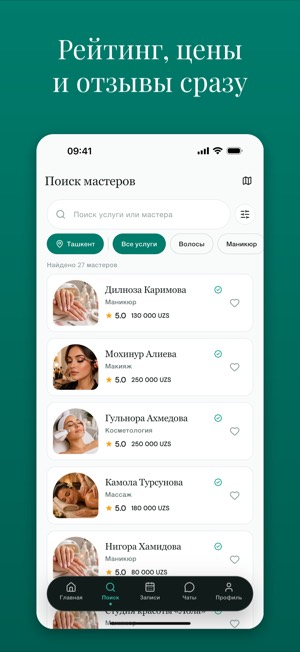
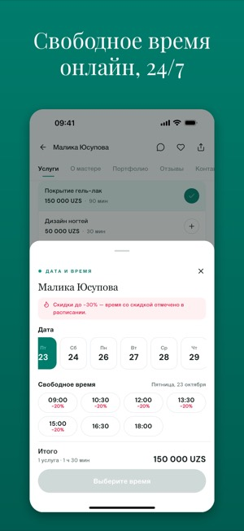
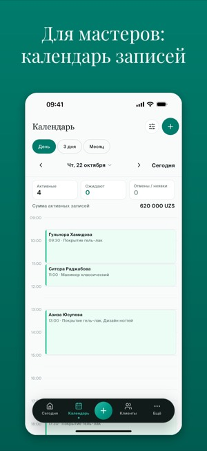
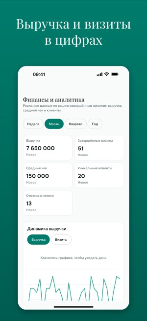

Laravel + Nuxt + FlutterGlowlyпроверяем…
Онлайн-запись к мастерам красоты: каталог мастеров на карте, свободное время и запись в пару касаний, календарь и клиентская база мастера, аналитика, отзывы и Telegram-бот. Работает в продакшене.
Сайт, админ-панель и мобильные приложения для iOS и Android (Flutter) — одна система, общий сервер, уведомления в реальном времени.
Что посмотреть:
- Найдите мастера на карте и откройте его профиль.
- Выберите услугу — увидите свободные окна и скидки на «тихие» часы.
- Пролистайте скриншоты мобильного приложения справа.
Мобильные приложения: в тестировании — App Store и Google Play
Открыть glowly.uz →



